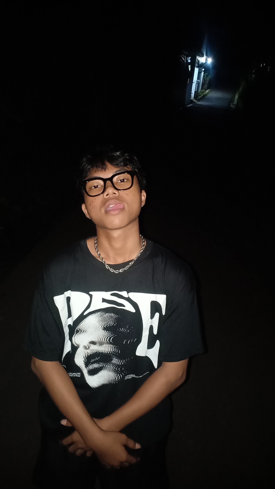

M. Fahri Permana
I'm a
Saya memiliki semangat belajar yang tinggi, disiplin, dan mampu bekerja secara mandiri maupun dalam tim. Melalui portofolio ini, saya siap menunjukkan kemampuan saya dan berkontribusi sebagai teknisi jaringan, atau teknisi komputer di lingkungan kerja profesional.

Muhammad Fahri Permana
Get to Know Me
Saya lulusan SMK TKJ yang fokus sebagai teknisi jaringan dan teknisi komputer. Siap bekerja profesional dengan kemampuan instalasi, perawatan, dan troubleshooting.
Dari penanganan jaringan hingga perawatan komputer, setiap pekerjaan saya lakukan dengan ketelitian dan tanggung jawab penuh. Bagi saya, setiap sistem yang berjalan stabil adalah hasil dari dedikasi dan perhatian pada detail.
Saya bekerja dengan komitmen tinggi untuk memastikan setiap perangkat, jaringan, dan layanan IT memberikan kenyamanan serta kinerja terbaik bagi pengguna.
Resume
Saya memahami setiap jaringan dan perangkat punya tantangannya sendiri. Karena itu, saya berkomitmen memberikan solusi yang efisien dan andal sebagai teknisi jaringan dan teknisi komputer.
Pengalaman Profesional
Arsitek Perangkat Lunak Senior
2024 - Sekarang
Peraktik Kerja Lapangan
- Membuat website portofolio
- Validasi data warga di web datacerdas.com
- Membantu Bimbingan teknologi di kantor Desa
- Membuat konten instagram
Pendidikan
SMK Putra Pelita
2024 - 2027
Bogor,Indonesia
MTS SA AR-Rahman
2021 - 2024
Bogor,Indonesia
MI MATLAUL ANWAR
2015 - 2021
Bogor,Indonesia
Portfolio
Saya adalah lulusan SMK Teknik Komputer dan Jaringan (TKJ) yang memiliki ketertarikan besar di bidang teknologi informasi, terutama jaringan komputer, troubleshooting perangkat, dan instalasi sistem. Saya senang mempelajari hal baru, menyelesaikan masalah teknis, serta bekerja secara teliti dan cepat. Keahlian Utama


{kind=link}
Let’s Connect and Collaborate
Terbuka untuk kolaborasi, project freelance, atau diskusi ide kreatif seputar teknisi jaringan & teknisi komputer .